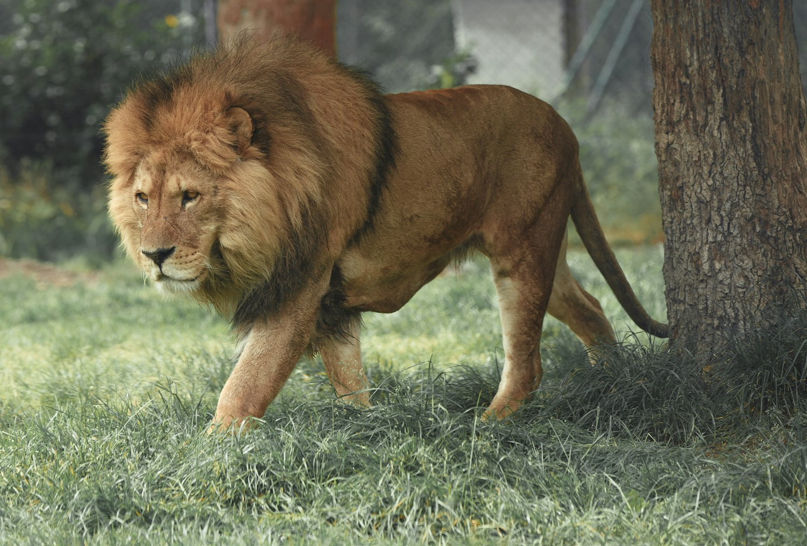
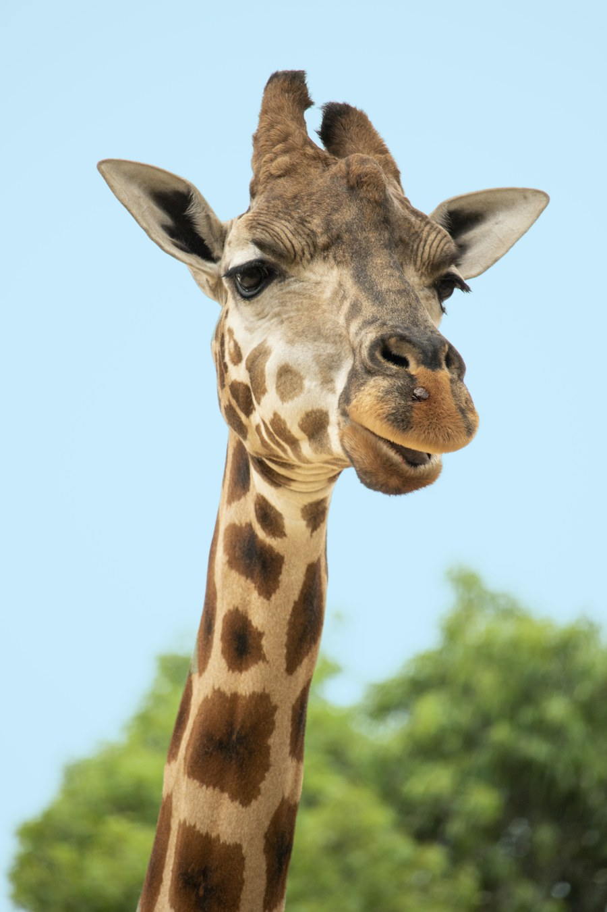
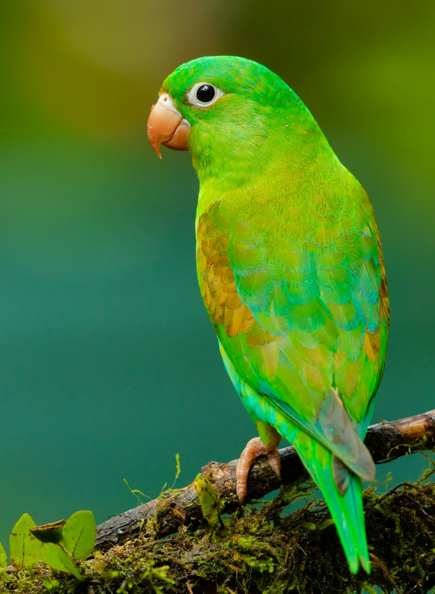
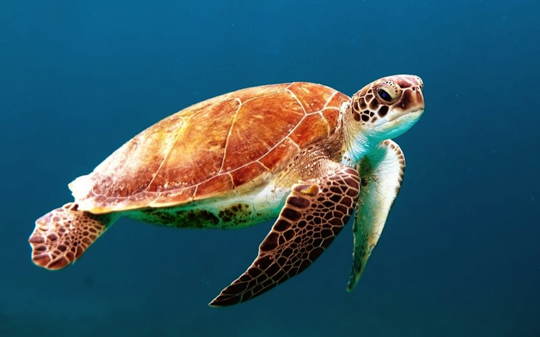

Conservación
Conoce la importancia de proteger a las especies y sus hábitats.
Explora nuevos hábitats, conoce a sus habitantes y descubre cómo podemos cuidar juntos la vida silvestre.
Recorre los senderos a tu ritmo y disfruta cada encuentro.
Cómo llegar al zoológicoUn espacio para compartir en familia y acercarnos al mundo natural.
Conoce la importancia de proteger a las especies y sus hábitats.
Explora senderos y zonas de observación con toda la familia.
Actividades que inspiran curiosidad y respeto por la vida silvestre.
Busca por nombre o filtra por especie y hábitat. En cada ficha encontrarás información general de la especie: dónde vive, qué come, cuánto puede vivir, tamaño, características y curiosidades.

Gran felino conocido por su fuerza, vida social y característico rugido.
Modelo 3D próximamente.

El animal terrestre más alto del mundo, reconocible por su largo cuello y sus manchas.
Arrastra para girar la jirafa y usa la rueda o pellizca para acercar.

Ave de gran colorido, conocida por su inteligencia, fuerte pico y vocalizaciones.
Modelo 3D próximamente.

Reptil caracterizado por su caparazón, que protege gran parte de su cuerpo.
Para esta ficha se debe confirmar la especie exacta del ejemplar del zoológico.
No encontramos animales con esos filtros. Prueba con otra búsqueda.
Fichas de muestra: confirma en el zoológico los datos de ejemplares, edades y recintos.
Explora las zonas y servicios en una ilustración elevada del zoológico.
Ilustración aproximada, no está a escala y no sirve para orientarte con precisión. Consulta al personal para ubicarte en el recinto.
Selecciona cualquier punto para ver su referencia.
Elige una zona o servicio del mapa.
Encuentra la ubicación del zoológico y consulta cómo llegar antes de tu visita.
Encuentra lugares para descansar, aprender y recargar energía durante tu visita.
Recorre el zoológico a tu ritmo y disfruta de sus espacios al aire libre.
Naturaleza · DescansoAcércate con respeto a los animales desde zonas preparadas para observar.
Miradores · ObservaciónUn espacio para hacer una pausa y compartir un momento en familia.
Familiar · AlimentosHistorias, avisos y actividades para mantenerte al día.
Descubre cómo reducir residuos y cuidar la fauna desde casa y durante tu visita.
Consejos para tu visitaConsulta horarios y recomendaciones antes de llegar para disfrutar mejor el día.
Ver informaciónVuelve a consultar esta sección para conocer las próximas actividades educativas.
Explorar eventosLas noticias son contenido de muestra. Confirma los avisos vigentes con el zoológico.
Actividades de ejemplo; las fechas oficiales se publicarán próximamente.
Recorrido educativo para observar y aprender sobre la vida silvestre.
Horario por confirmar · Punto de encuentro por confirmarUna actividad participativa para descubrir por qué cada hábitat importa.
Horario por confirmar · Punto de encuentro por confirmarElige una fecha y calcula el costo estimado de tu grupo. Esta demostración no procesa pagos ni reserva entradas.
Información útil para organizar tu recorrido.
Martes a viernes de 10:00 a 16:00 hrs; sábado y domingo de 10:00 a 17:00 hrs. Confirma días festivos y horarios vigentes antes de tu visita.
Los precios que aparecen en el formulario son solo de muestra y no son tarifas oficiales. Consulta directamente con el zoológico.
Por seguridad y bienestar de los animales, consulta las reglas vigentes con el personal antes de llevar mascotas.
Las reglas pueden cambiar. Revisa los avisos del zoológico o pregunta al personal al planear tu visita.
Confirma la disponibilidad de estacionamiento, accesos y apoyos de movilidad con el zoológico antes de acudir.
Esta página es una demostración y no emite boletos reales. Para compras y cambios, contacta directamente al zoológico.
Un adelanto de los paisajes y animales que puedes descubrir.